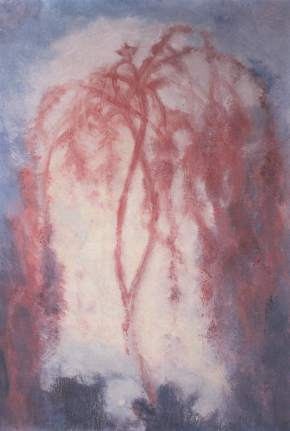

Het Stralende Hart
Max Prantl’s hoofdwerk is toch wel “Het Stralende Hart” (oorspronkelijke titel: “Der Mensch ohne Angst—Licht aus der Herzmitte”), dat een getrouw en indringend verslag geeft van zijn innerlijke verlichtingsweg en de daaruit voortvloeiende inzichten.
Het boek beschrijft op indringende wijze de verlichtingsweg die Prantl is gegaan en zijn geestelijke inzichten die hij zich daarbij eigen maakte, en is gesteld in een eigentijdse taal die aan helderheid niets te wensen overlaat. Geen zweverigheid, geen vrijblijvende visioenen, maar concreet en een bijna nuchter en zakelijk beoordelen van eigen levenshouding. Begrippen als 'Verzet je tegen de haat', 'Wees vrij van angst' en dergelijke meer laten geen ruimte voor vrijblijvendheid. Van ieder van ons wordt een eenduidige keuze verwacht. Begrippen als strijd, eigen verantwoordelijkheid, kiezen, geloofwaardigheid en concreet leven vanuit innerlijk licht zijn daarbij vanzelfsprekende elementen.
Terwijl hij zich baseert op christelijke waarheden, stijgt hij er tevens op 'oosters' aandoende wijze bovenuit. 'Ik wil de Waarheid, hoe die ook moge zijn…'
Lezen
U kunt het boek hier gratis downloaden als PDF, Word, of ePub.
Enkele citaten
“…Ik verlang van niemand geloof en erkenning. Iedereen moet mijn woorden in oneindige vrijheid afwijzen of aannemen, door niets anders daartoe verleid of overgehaald dan door het besef, dat ze waar zijn. Deze houding van mij stemt overeen met mijn besef dat ik mij tegenover niets of niemand anders dan tegenover mijzelf hoef te bewijzen. Deze houding van mij stemt overeen met de manier waarop ik zelf mijn toekeren naar de waarheid, de Oneindige Liefde, heb beleefd, door niets anders daartoe verleid dan door het pure besef van de waarheid. Deze houding van mij stemt overeen met het bewustzijnsniveau van de mensen tot wie ik mij wend. Het voorste front van de mensheid is rijp geworden om de waarheid zelfstandig te herkennen.”
“De wonderen van Christus waren en zijn zinvol en noodzakelijk. De nog dromende mensheid, die Christus als hun leider naar God uitkoos, kiest en zal kiezen, is nog niet rijp om de waarheid zelfstandig te herkennen. Zij kan en moet religieuze bewijzen verlangen voor de goddelijke kracht van haar leider, voordat ze besluit hem te volgen.”
“Ik heb een andere taak. Ik moet geen dromende mensen leiden, maar ik moet dromende mensen wekken. Ik kan en wil Christus in zijn werkzaamheid n de wereld niet vervangen of zelfs verdringen. Ik hoef de aardse werkzaamheid van Christus dus ook niet te imiteren. Ik moet die aanvullen, overeenkomstig het nu bereikte bewustzijnsniveau van de voorste geestelijke frontlijn van de mensheid…”
…Een ‘aartsengel’ is een goddelijke geest, een engel die een speciale taak op zich heeft genomen en die wil vervullen door te dienen, of die volgens zijn eigen opvatting een geheel eigen, afzonderlijke weg wil gaan en de vervulling van zijn wil in de heerschappij over anderen wil vinden (Lucifer en zijns gelijken, de latere duivels).
Een aartsengel van de lichte, goddelijke weg zal vrijwillig ergens in het heelal incarneren, hij wil ‘vlees worden’, niet alleen om zijn geestesziel tot een unieke bestaansvorm te ontwikkelen - zoals alle andere lichte wezens die gekozen hebben te incarnerenmaar hij wil door die ontwikkeling tevens al zijn krachten op een bepaald doel richten; hij wil volkomen ondubbelzinnig, ‘eenzijdig’ worden om zijn speciale taak met gebalde kracht te kunnen dienen.
Maar toch wil hij alle wezens, lichte en duistere, die hij helpend moet dienen of moet bestrijden, tot in hun diepste innerlijk kunnen begrijpen. Hij trekt ook van het begin af aan de speciale aandacht van de zwarte machten, die hem door verlokkingen en bedreigingen, door verblinding en allerlei soorten kwellingen tot iedere prijs van zijn weg af proberen te brengen. Om deze redenen is zijn ontwikkelingsweg lang en zwaar (Nietzsche, die net als vele anderen ook in die rij thuishoort, hoewel zijn diepe inzichten nog door gevaarlijke dwalingen overschaduwd worden, brengt die ervaring aldus onder woorden: ‘Wie eenmaal veel te zeggen heeft, keert veel zwijgend in zichzelf.Wie eenmaal als bliksem moet flitsen, moet lang wolk zijn’).
Ook de aartsengelen van de zwarte weg, de heerszuchtigen, incarneren omdat ze volgens hun opvatting hun geestesziel immers tot een heel speciale unieke bestaansvorm willen ontwikkelen en omdat ze anderen trachten te overheersen. Dat is in de geestenwereld niet mogelijk, aangezien daar geen verblinding door anderen bestaat. Maar omdat ze hun definitieve beslissing vóór of tegen God ook pas als volledig bewuste, geïncarneerde wezens kunnen nemen (door hun voorlopige afvalligheid van God vertroebelt hun bewustzijn, aangezien hun wil - die in zichzelf verscheurd is, omdat die antigoddelijk maar desondanks in wezen nog goddelijk is - hun geestesziel vervormt), kunnen ze door lichte geesten ook tot incarnatie gedwongen worden als ze die weg niet vrijwillig kiezen (‘val der engelen’). Want weliswaar behoort de mogelijkheid om iedere beslissing te kunnen nemen tot het wezen van de goddelijke wil, die immers oneindige vrijheid is. Maar alleen een volkomen duidelijke beslissing beantwoordt aan zijn wezen. Als de geesten van de zwarte weg dus tot die volkomen duidelijke beslissing gedwongen worden (het ‘voor’ of ‘tegen’ staat hun niettemin volkomen vrij), dan ondergaat niet hun vrije wil die dwang (overeenkomstig zijn wezen zou die immers een ondubbelzinnige beslissing voor of tegen God zelf moeten willen), maar hun niet geleide, vervormde geestesziel…
… Mijn krachten, mijn gedachten en gevoelens die ik uitzend werken net als die van alle andere geestelijke machten op het onderbewustzijn van de mensen. De meesten verzetten zich ertegen om deze impulsen in hun wakend bewustzijn te laten doordringen, uit angst voor nieuwe inzichten. Slechts bij zeer weinigen worden de gedachten en gevoelens, die ik hun toezend, direct of na enkele dagen volledig bewust. Zij denken dan dat hun plotseling iets nieuws ‘ingevallen’ is, maar ze weten niet waar vandaan. Of ze geloven dat ze in hun ‘fantasie’ met mij spreken, en denken dan dat ze zich mijn antwoorden enkel voor de geest gehaald hebben omdat ze mij persoonlijk kennen. Ik zie dat ik het wakend bewustzijn van de mensen eerst vrij moet maken voor mijn uitstraling. Dat kan eigenlijk alleen gebeuren door deze brieven op een algemeen toegankelijke manier op te schrijven…
… Ieder ‘sterk’ mens die tegen God, tegen Het Leven leeft en zondigt wordt eenmaal zwak en wordt dan onvermijdelijk een prooi van de duivelse machten die zich begerig en zonder aanziens des persoons storten op alles wat zwak is, ofwel hij zakt weg in zijn eigen duivelse verdorvenheid, in de door hemzelf gewilde eeuwige verdoemenis. Die vereffening, die vereffenende gerechtigheid komt weliswaar onvermijdelijk en vanzelf tot stand, echter pas op lange termijn en vaak pas in de geestenwereld. Binnen het in tijd begrensde aardse leven is het anders. Zolang de schuldige sterk is, ontzien en helpen ze hem (met zijn misdaden tegen anderen en zijn eigen goddelijke wil dienthij immers hun duivelse ‘lust’, hun wrede leedvermaak). In plaats daarvan storten ze zich begerig op alles wat zwak is en met een bijzonder satanische bevrediging op alles wat op zichzelf vanuit goede wil zwak is, op degenen die van angst vervuld en verblind zijn, op het onrijpe, onwetende en derhalve weerloze leven dat vanuit een moreel niet verwijtbare verblinding de goddelijke hulp van zich afhoudt. Zij die moreel gezien buiten hun schuld zwak en verblind zijn kunnen door de pijn en wanhoop die uit hun verblinding voortvloeien weliswaar in ‘tijdelijk’ opzicht een enorme schade, belemmering en tijdelijke verlamming van hun ontwikkeling ondergaan, maar nooit kan hun innerlijke instelling tegenover het goddelijke daardoor hoe dan ook beïnvloed worden. Dat is enkel een zaak van de vrije wil. Geen liefdeloosheid, geen wreedheid, geen bedrog, geen enkel onrecht, hoe groot ook, dat een mens door anderen overkomt kan zijn eventuele keuze tegen God ook maar in het minst bevorderen. Hoe groter het onrecht is dat hem overkomt, des te duidelijker zou hij, als hij dat zelf wil, de afschuwelijkheid van iedere duivelse ontaarding kunnen herkennen en des te vastbeslotener het licht zoeken. Niemand gaat tegen zijn eigen vrije wil in eeuwig verloren. Niemand wordt een duivel door het toedoen van anderen of door gebrek aan hulp van anderen.Die verblinding is in vrijheid zelf gewild en is door niemand te genezen of te beïnvloeden…